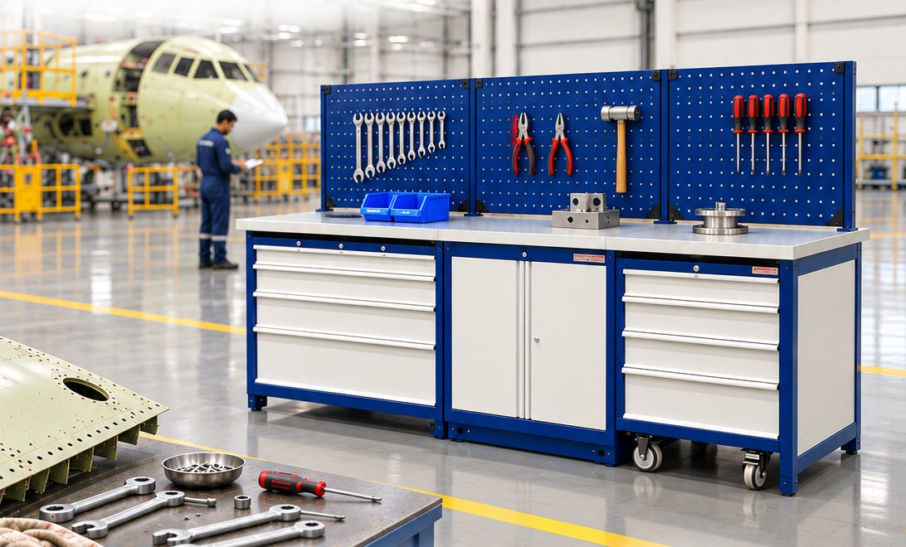
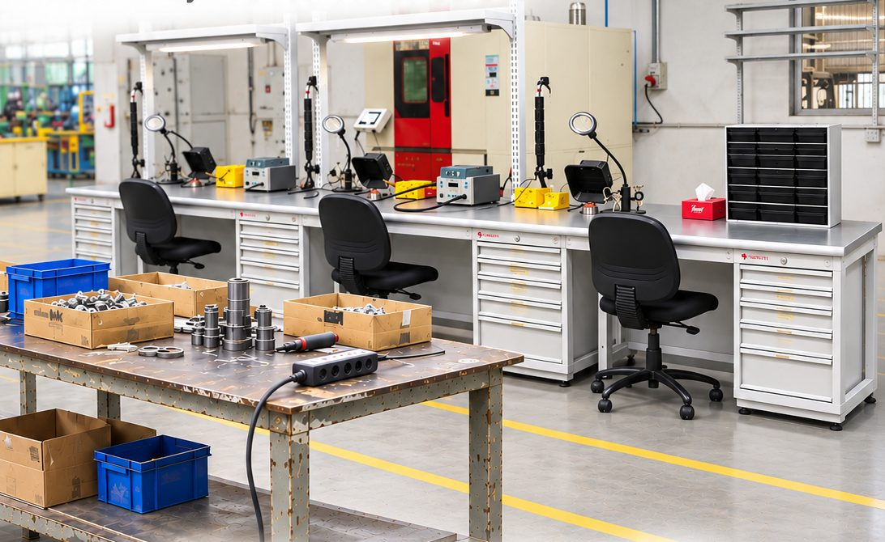

Aerospace workspaces, built for precision and control.
Aerospace and aviation facilities are built around highly specialized work environments, where every stage—from research and assembly to testing and maintenance—demands precision, control, and repeatability. Each space operates with its own set of functional requirements, environmental conditions, and compliance obligations…

Sound familiar?
The everyday problems we hear most often from aerospace teams.
R&D & Prototyping Labs
Fixed workstations slow down changeovers, create layout bottlenecks, and can add ergonomic strain during long precision sessions.
Avionics & Electronics Assembly
The biggest risk is invisible damage. A static discharge may not be felt by the operator, but it can still damage a component or create a latent…
Precision Mechanical Assembly
If the bench flexes, vibrates, or sits at the wrong height, the operator has to compensate constantly.
Structural Fabrication & Sub-assembly
Without proper work surfaces and mobile storage, operators end up using improvised setups that slow the process and raise FOD risk.
9 application spaces. One configured system.
Choose a space to see the challenge, how we configure it and the systems involved.

R&D & Prototyping Labs
R&D and prototyping labs are where new aerospace systems are conceived, assembled, and validated before production. These spaces need to stay agile because project requirements change often, and the same benching rarely works for every stage of development.
AS9100 Rev D requires controlled work environments that support repeatability and product conformity. Where electronic prototypes are handled, IEC 61340-5-1 ESD control also becomes relevant.Fixed workstations slow down changeovers, create layout bottlenecks, and can add ergonomic strain during long precision sessions. When the lab has to be rebuilt for every new program, time and budget are lost before testing even begins.
We provide modular, configurable workstation systems that evolve as per the space. ESD-safe lab workstations, chemical-resistant worktops, overhead storage, and mobile benches help the lab stay organised, adaptable, and ready for the next project.
Outcome: A flexible lab workspace that supports prototype development, protects sensitive assemblies, and avoids unnecessary rebuild costs.

Avionics & Electronics Assembly
Avionics and electronics assembly zones handle LRUs, PCBs, wiring harnesses, and other sensitive sub-systems. In these areas, electrostatic protection must be built into the workspace from the start.
IEC 61340-5-1 is the key ESD control standard for electronics and avionics assembly. Many aerospace supply chains also expect ANSI/ESD S20.20-aligned practices.The biggest risk is invisible damage. A static discharge may not be felt by the operator, but it can still damage a component or create a latent failure that appears only after the aircraft enters service.
We provide application-configured ESD workstations with ESD proof worksurfaces, grounding points, and ESD accessories. The workstation becomes a complete protected area.
Outcome: A fully grounded assembly environment that helps protect sensitive avionics from hidden ESD-related damage.
Precision Mechanical Assembly
Precision mechanical assembly areas bring together machined parts, alloys, and composite structures that must fit and function accurately. The workspace has to support both delicate alignment work and physically demanding assembly tasks.
AS9100 Rev D work environment requirements support the need for stable, controlled assembly conditions. Ergonomic good practice also favours ergonomic work benches in repetitive assembly operations.If the bench flexes, vibrates, or sits at the wrong height, the operator has to compensate constantly. That slows the work, increases fatigue, and can affect assembly quality over long shifts.
We provide robust assembly workbenches with worktop options selected for the application, along with adjustable accessories, tool holding, parts bin rails, and under-bench storage for better control and less clutter.
Outcome: A stable and ergonomic assembly station that supports accuracy, repeatability, and cleaner build flow.

Structural Fabrication & Sub-assembly
Structural fabrication and sub-assembly zones handle large metal or composite parts such as fuselage sections, ribs, brackets, and mounting frames. These are heavy-duty work areas where tools, fixtures, and parts all need clear, organised access.
AS9100 Rev D and AS9146 support controlled work environments and FOD prevention in aerospace fabrication. High load capacity and safe material handling are also essential for facility safety.Without proper work surfaces and mobile storage, operators end up using improvised setups that slow the process and raise FOD risk. Large parts can also become difficult to move safely between fabrication, fitting, and inspection stages.
We provide rugged fabrication workbenches and mobile workstations for heavy sub-assembly work. Durable worktops, lockable castors, base cabinets, and link trolleys help keep tools organised and the shop floor clear.
Outcome: A heavy-duty fabrication workspace that keeps tooling accessible and movement between stages under control.

MRO (Maintenance, Repair & Overhaul) Bays
MRO bays are the operational engine rooms where aircraft are serviced, repaired, and returned to service. Technicians work around aircraft, so the workspace has to move with the job.
DGCA CAR 145 and Part 145 require controlled tool and equipment management. AS9110 adds systematic accountability for tools, storage, and return-to-service processes.In MRO, time is directly linked to revenue and safety. Poor layout, unorganised tools, and fixed benches reduce wrench time, while missing tools or poor control can create serious airworthiness risk.
We provide rugged, mobile maintenance workbenches, tool trolleys, and cabinets configured for line-side work. Foam-insert or shadow-board tool control, durable worktops, and pegboard storage support organised, auditable maintenance flow.
Outcome: A compliant maintenance workspace that improves tool control, supports audits, and reduces wasted technician movement.
Engine Component Assembly
Engine component assembly areas are precision-critical zones where turbine modules, compressor sections, shafts, and related sub-systems are assembled. The work combines heavy handling with very fine build requirements.
AS9100 Rev D and engine OEM work instructions require traceability of components, seals, and fasteners. FOD prevention and calibrated tool control are also critical in this environment.The main challenge is balancing weight and precision. If the workspace is not organised properly, operators face higher injury risk, more handling difficulty, and greater chance of missing or mixing small parts.
We provide heavy-duty assembly workbenches with stable worktops, segregated storage for seals and fasteners, and mobile cabinets for torque tools and specialised equipment. The layout supports clean, sequential engine build work.
Outcome: An organised engine assembly workspace that supports traceability, controlled handling, and cleaner build execution.
Crimping & Harness Build Area
Crimping and harness build areas are dedicated wiring assembly zones where aircraft harnesses are cut, stripped, crimped, inspected, and tested. These stations handle many small parts that must be organised in sequence.
AS9100 Rev D and IPC/WHMA-A-620 support controlled workmanship in harness assembly. Where electronic signal harnesses are involved, IEC 61340-5-1 ESD practices are also important.When connectors, contacts, and consumables are not clearly arranged, mistakes happen quickly. Poor lighting can also lead to colour identification errors, rework, and avoidable non-conformance.
We provide configurable benches with overhead storage, bin rails, pegboards, and task lighting for organised harness work. ESD-safe surface options and grounding provisions can be added where required.
Outcome: A structured harness assembly station where components stay organised, visibility improves, and rework is reduced.
Quality Inspection, Calibration & Metrology
Inspection, calibration, and metrology areas are controlled zones where parts and instruments are verified against defined standards. Accuracy here affects the trust placed in everything that passes through the facility.
AS9100 Rev D, ISO 10012, and where applicable NABL / ISO/IEC 17025 set expectations for calibration control and traceability. DGCA CAR 145 also requires calibration discipline for maintenance tooling.The most common issue is not measurement itself, but poor control of instruments and bench conditions. If calibrated and uncalibrated tools are mixed, or the surface is unstable, audit findings and measurement doubts quickly follow.
We provide stable precision workstations, support benches, and organised storage for instruments and gauges. Clear segregation, clean worktops, and proper lighting help make the inspection area audit-ready.
Outcome: A controlled inspection environment that supports accuracy, traceability, and clearer audit readiness.

Tool Crib & Kitting Areas
Tool crib and kitting areas manage the flow of tools, parts, and consumables across the facility. These zones are central to traceability, picking accuracy, and on-time issue to the shop floor.
DGCA CAR 145, AS9110, and AS9146 all support disciplined tool control and traceability. Calibrated tools also need visible status control under ISO 10012-based practices.A disorganised crib slows technicians down and increases the risk of missing tools or incorrect kits. That affects productivity, adds search time, and can create FOD concerns in maintenance environments.
We provide high-density tool crib storage, issue counters, flow racks, and mobile kitting trolleys. Foam-insert and shadow-board layouts make tool presence easy to see and help the crib run in a more controlled way.
Outcome: A tool and kitting system that improves accountability, speeds up issue and return, and supports FOD prevention.
Fundamentals of workspace design.
- Precision
- Electrical protection
- Traceability
- Tool control
- Ergonomics
- Repeatability
- Adaptability
The Furnisys workspace ecosystem.
Work systems, storage systems and accessories designed to work as one.
Work systems

ESD Workstations
Comprehensive ESD-safe solutions designed to protect sensitive components and ensure a static-controlled environment.

Overhead Cabinets Shelves and Mounting Components
Keep essential items within reach and your worktop organized with overhead storage solutions. Cabinets can be wall-mounted or fixed onto riser shelves, while adjustable…

Stands & Trolleys
Configure stands and trolleys to securely hold or transport parts, tools, and test equipment—ideal for use across production, assembly, repair, and maintenance environments.

Link Flow Racks
Experience efficient material handling with LINK Flow Racks—designed to streamline picking, sorting, and assembly processes.
Storage systems

Base Storage Cabinet
"Modular, high-capacity storage built to handle heavy loads" adapts to changing workspaces and demanding storage needs.

Mobile Cabinets
Designed for workflows that require tools and parts on the move, Furnisys mobile cabinets combine storage and mobility in one solution

Issue Counters
Furnisys issue counter cabinets offer organized, accessible storage for fast-moving items of various sizes—designed to keep your workspace efficient, clean, and ready…
Proof from real installations.

Workstation Systems for an Aerospace Manufacturer
Industry: Aerospace & Defense, Product & Parts Manufacturing Function: Research & Development Furnisys Program: Workstation Systems, Link Uprighter System, Storage &…

Kritsnam Case Study
Founded in 2015 in Kanpur, Kritsnam Technologies makes Artificial intelligence-backed solutions to manage water resources sustainably. With their product Dhaara, a…
An ESD-safe testing lab for medical equipment
Trusted by manufacturers, laboratories and institutions across industries. See our clientele
Frequently asked questions.
Which standards do aerospace workspaces need to support?
Depending on the space, requirements commonly include AS9100 Rev D, AS9100 Rev D requires controlled work environments that support repeatability, AS9100 Rev D work environment requirements support the need for stable, IEC 17025 set expectations for calibration control, IEC 61340-5-1 ESD control also becomes relevant., IEC 61340-5-1 ESD practices are also important.. We configure worktops, grounding, storage and segregation to support them.
Can one system cover every aerospace space?
Yes. Work systems, storage systems and accessories share standard modules, so each space gets its own configuration within one consistent system.
Can the setup change as our operations grow?
Yes. Stations are built from standard parts, so you can add drawers, power, uprighters or bays, or relocate stations, without replacing what you already have.
Do you plan the layout before manufacturing?
For confirmed projects we carry out a site study and prepare 2D and 3D layouts and a proposal before anything is manufactured.
How we engage.
Share your brief
Scope, application spaces, timelines and any drawings.
Specialist discussion
A workspace specialist reviews the brief with your team.
Site study & layout
For confirmed projects: site study, 2D/3D layout and proposal.
Manufacture & install
Built in Navi Mumbai, installed and supported by our team.
Planning a new aerospace space?
Share your project brief. Every brief is reviewed by a workspace specialist who will contact you to discuss scope, layout and next steps.
Application-led design
Every station configured around the process, not a catalogue.
One accountable team
Design, manufacturing and installation from Navi Mumbai.
Built to scale
Standard modules that grow with your operation.